Capítulo 5
Os movimentos na Construção Civil
Que tipos de situações ou objetos têm conceitos da física relacionados à movimento? Existe de fato algo que seja totalmente imóvel?
ContextualizandoDesde a organização de um projeto arquitetônico, até a execução de fato de uma construção, passando pela produção e transporte de insumos para este setor, é necessário causar e controlar movimentos. 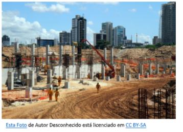
Quando você observa um arranha-céu consegue imaginar que ele se movimenta? Os movimentos podem conferir velocidade para acelerar processos, mas também podem garantir que um prédio gigantesco não desabe, ou na estrutura de veículos diminuir a força de impacto através de amortecedores.
Para entender mais
Megaestruturas inteligentes: a engenharia dos novos arranha-céus
Você já parou para se perguntar como um prédio de mais de 100 andares é construído? Como é de se esperar, usar a tecnologia que é empregada em edifícios menores para erguer arranha-céus de quase 1 km de altura não funciona e poderia resultar em desastres monumentais.
O problema é que existem várias forças atuando sobre esses edifícios e, conforme a altura, isso fica ainda mais crítico. As megaestruturas inteligentes são edifícios e construções que podem se adaptar sozinhos a diversos desastres com o mínimo de dano.
Para conseguir fazer um prédio dessas proporções, é preciso calcular cada detalhe: o formato do edifício para que ele absorva o impacto do vento, os materiais usados, as saídas de emergência, o tipo de tecnologia empregado para combater eventos de acordo com a geografia do lugar etc. [...]
Sem a resistência dos prédios ao redor, a parte de cima de um arranha-céu sofre com ventos muito mais fortes. Além disso, por não ter um ponto de apoio fixo no topo, ele pode balançar vários metros para os lados ou, em casos extremos, quebrar e simplesmente cair no meio da cidade. [...]
Ventos fortes que podem balançar prédiosComo já dito anteriormente, os prédios mais altos sofrem bastante com esse tipo de fenômeno e podem causar desastres de engenharia se as medidas corretas não forem tomadas. A forma do prédio, a estrutura e grandes projetos internos contam bastante para evitar que os ventos sejam “cruéis” com esses arranha-céus. 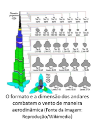
O Burj Khalifa, em Dubai, é o prédio mais alto do mundo (160 andares e altura de 828 metros) e os seus engenheiros precisaram arranjar soluções de vários tipos para lidar com o vento. Por exemplo, o formato dos andares, com três pontas para os lados e uma base mais larga (como a figura acima mostra), é bastante aerodinâmico e serve para “enganar o vento”.
Nem sempre o uso de materiais mais resistentes e densos é recomendado. É necessário deixar que o prédio realmente balance um pouco e tenha certa flexibilidade para que ele possa suportar melhor os ventos. O Taipei 101 (localizado em Taiwan, com 101 andares em 509,2 metros), por exemplo, possui uma esfera imensa pendurada na parte de dentro do topo, que serve para contrabalancear e amortecer o movimento do vento. 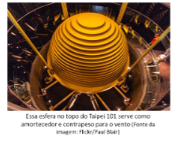
Essa esfera balança cerca de 35 cm a cada sete segundos, algo que é considerado mínimo e imperceptível perto do tamanho deste arranha-céu. Esse movimento é contrário ao do vento e, desta forma, acaba amortecendo o balanço para todos os lados. Em caso de furacões, a esfera possui um sistema de segurança com pistões para não balançar mais do que a média.
(Re)construindo conhecimentosÉ bastante intuitivo determinar se algo está em movimento ou parado. Mas você consegue explicar o que define se algo está se movimentando?
O estudo dos movimentos faz parte da física (cinemática), vamos nos dedicar agora a estudar como o movimento acontece.
GlossárioPara o estudo dos movimentos, conhecer alguns conceitos básicos é essencial. Sempre que necessário, retome os termos abaixo:
• Aceleração- é a rapidez com que a velocidade varia. Quanto maior a aceleração, mais rápido a velocidade aumenta.
• Corpo extenso - objeto que ao se movimentar ocupa uma parte importante da trajetória. Por exemplo, um caminhão que mede 25 m ao se movimentar sobre uma ponte de 50 m de comprimento ocupa metade do trajeto, é considerado um corpo extenso.
• Deslocamento - é variação de posição de um corpo depois do movimento. Por exemplo, se um carro parte do quilômetro 15 de uma rodovia e se movimenta até o quilômetro 73, houve um deslocamento de 58 km.
• Intervalo de tempo - é o tempo transcorrido enquanto um observador avalia o estado de movimento ou repouso de um corpo.
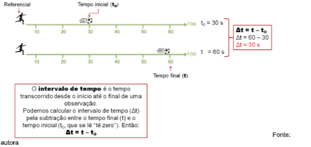• Movimento - quando um corpo modifica sua posição em relação a um ponto de referência em um intervalo de tempo.
• Movimento acelerado - quando um corpo ganha velocidade. Por exemplo, quando o pedal acelerador de um carro é acionado.
• Movimento retardado - quando o corpo perde velocidade. Por exemplo, quando é acionado o freio de um carro.
• Ponto material - quando o tamanho do objeto que se movimenta é irrelevante em relação à trajetória que ele percorre, dizemos que é um ponto material. Por exemplo, em um trajeto de cinquenta mil metros (50000 m ou 50 km) pouco importa se um caminhão possui 20 ou 30 metros de comprimento. Se pudéssemos olhar a trajetória de 50 km de cima, o caminhão se transformaria em um pequeno ponto.
• Posição - é a distância entre um corpo e o referencial. Por exemplo, quando dizemos que uma fábrica fica no quilômetro 73 de uma rodovia estamos informando a posição da fábrica em relação ao referencial, que no caso é o início da rodovia.
• Referencial - para determinar se algo está parado ou em movimento é sempre necessário determinar um ponto de referência, que passa a ser o referencial do movimento. Por exemplo, o motorista de um ônibus que se desloca pela rua está em movimento se o referencial for a parada de ônibus (que ficou para trás). Entretanto, se o referencial for um passageiro sentado, então o motorista está parado.
• Repouso - quando um corpo não altera sua posição em relação a um ponto de referência em um intervalo de tempo.
• Trajetória - é o caminho percorrido pelo objeto durante o movimento. Por exemplo, quando usamos um aplicativo de localização, ele nos fornece a trajetória a ser percorrida de um ponto a outro.
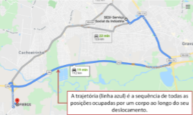• Velocidade - é a rapidez com que um corpo de desloca de um ponto ao outro. É a relação entre a distância percorrida e o tempo gasto para isso.
Para descrever o movimento sempre precisamos ter em mente o referencial. Quando o corpo em movimento se afasta do referencial dizemos que executa um movimento progressivo. Quando se aproxima do referencial trata-se de um movimento regressivo (ou retrógrado).
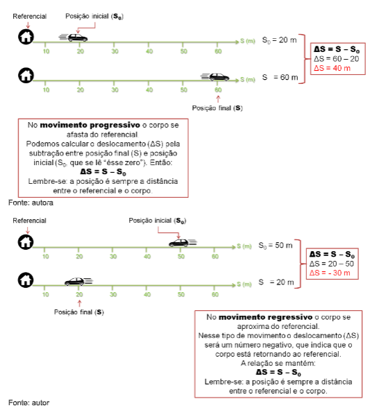Em um movimento progressivo o deslocamento é sempre positivo (ΔS > 0). No caso de um movimento regressivo o deslocamento é sempre negativo (ΔS < 0). Isso nos indica algo muito simples, no movimento progressivo o corpo se afasta continuamente do referencial. Já no movimento regressivo o corpo se aproxima continuamente do referencial. No nosso cotidiano chamamos o primeiro caso de "ida" e o segundo de "vinda".
Em geral, o deslocamento e o intervalo de tempo são relacionados para determinar a rapidez do movimento, ou seja, a velocidade. É possível determinar a velocidade em cada instante de tempo (velocidade instantânea), mas é mais comum utilizarmos a velocidade média para descrever a rapidez de um movimento ignorando as variações instantâneas.
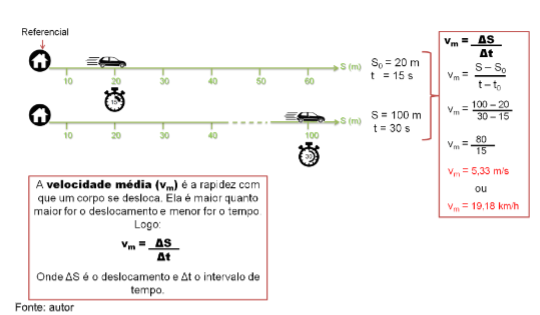Você já pensou sobre isso também?
No nosso dia a dia estamos acostumados a medir a velocidade em quilômetros por hora (km/h). Você já pensou o que isso significa? Km/h é uma unidade de medida que representa quantos quilômetros foram (ou serão) percorridos em uma hora. Logo, se a velocidade for constante, um carro que se desloca a 60 km/h terá percorrido 60 quilômetros depois de uma hora de percurso, em 30 minutos terá percorrido 30 km e em 2 h, 120 km.
Outra unidade de medida para a velocidade é metros por segundo (m/s). Ou seja, informa a quantidade de metros percorridos a cada segundo. É possível converter uma informação em km/h para m/s e vice versa a partir de um cálculo simples. Entretanto é importante não misturar as unidades!
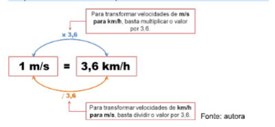Quando a velocidade não varia ao longo do tempo, dizemos que se trata de um movimento retilíneo uniforme, como a velocidade é uma grandeza vetorial, isso significa que não haverá mudança na intensidade, na direção ou no sentido. A consequência disso é que o corpo percorre distâncias iguais em intervalos iguais (por exemplo, se a velocidade for 3 m/s ele percorrerá sempre 3 metros a cada segundo).
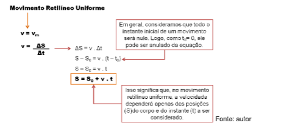Entretanto, em praticamente todas as situações do nosso cotidiano há variação na velocidade, nesses casos, podemos estar lidando com um movimento uniformemente variado. A variação uniforme é causada por aceleração constante, ou seja, em qualquer instante a aceleração será a mesma. Quanto maior a aceleração, mais rapidamente a velocidade aumenta.
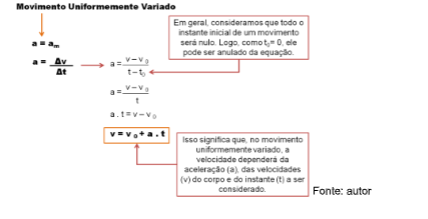As reflexões acima nos ajudam a entender e prever alguns dos movimentos que observamos no dia a dia. Entretanto, em situações reais é difícil que um movimento seja unicamente retilíneo uniforme ou uniformemente variável. Em geral, o que acontece é uma combinação dos dois. A equação de Torricelli dá conta dessa complexidade, pois além da aceleração considera também o deslocamento.
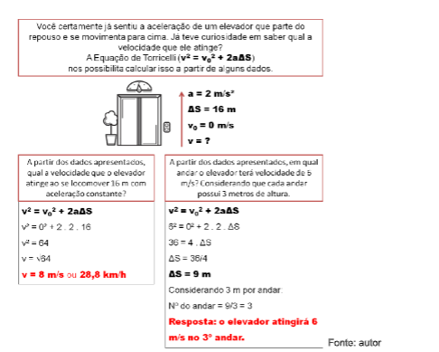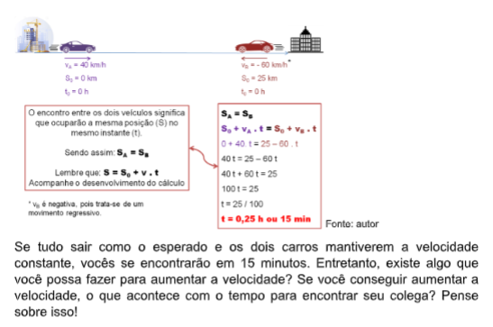
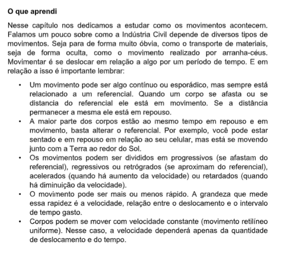
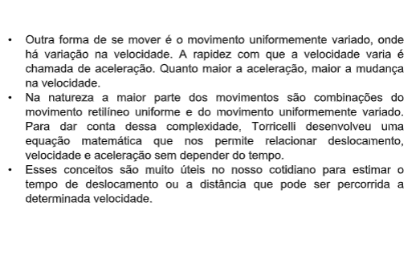
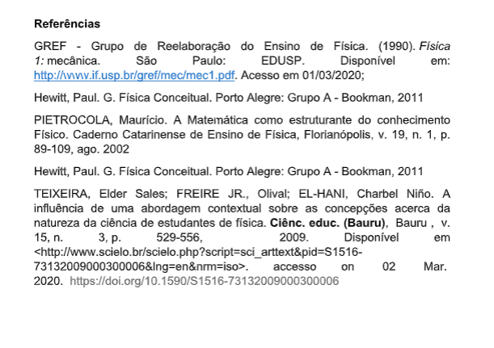